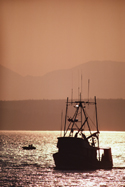

Last Updated Sunday 24 March 2012 5:30PM PST
Teachers Awarded A Raise
Congress passed a bill today that will change the state of education in the U.S. The Alder's Education Reform Bill, sponsored by Florida Democrat David Alders, gives teachers a raise as part of a major overhaul of the entire education system. The raise is expected to be between 33% and 47%, depending upon years of service. The entire package will cost the federal government billions over the next 10 years. In a press conference, Congressman Alders said: "It's the least we can do for tomorrow's future."
Congress passed a bill today that will change the state of education in the U.S. The Alder's Education Reform Bill, sponsored by Florida Democrat David Alders, gives teachers a raise as part of a major overhaul of the entire education system. The raise is expected to be between 33% and 47%, depending upon years of service. The entire package will cost the federal government billions over the next 10 years. In a press conference, Congressman Alders said: "It's the least we can do for tomorrow's future."
Congress passed a bill today that will change the state of education in the U.S. The Alder's Education Reform Bill, sponsored by Florida Democrat David Alders, gives teachers a raise as part of a major overhaul of the entire education system. The raise is expected to be between 33% and 47%, depending upon years of service. The entire package will cost the federal government billions over the next 10 years. In a press conference, Congressman Alders said: "It's the least we can do for tomorrow's future."
Kingfish Return Early
From all reports this week it seems we are getting a little early push of kingfish in the area. Some nice ones were caught close to the beach at Redington as well as off St. Pete. Beach near the artificial reef. They all were nice sized fish over 20 pounds and were caught among schools of large Spanish mackerel. Of course Spanish mackerel is just about their favorite food when they are around. The Spanish have been large as well, from 4 to 7 pounds being the average size caught by the live bait fishermen. The only problem right now is that you will have to move around enough to find water that is free of red tide and that can be difficult as windy as it has been.
From all reports this week it seems we are getting a little early push of kingfish in the area. Some nice ones were caught close to the beach at Redington as well as off St. Pete. Beach near the artificial reef. They all were nice sized fish over 20 pounds and were caught among schools of large Spanish mackerel. Of course Spanish mackerel is just about their favorite food when they are around. The Spanish have been large as well, from 4 to 7 pounds being the average size caught by the live bait fishermen. The only problem right now is that you will have to move around enough to find water that is free of red tide and that can be difficult as windy as it has been.